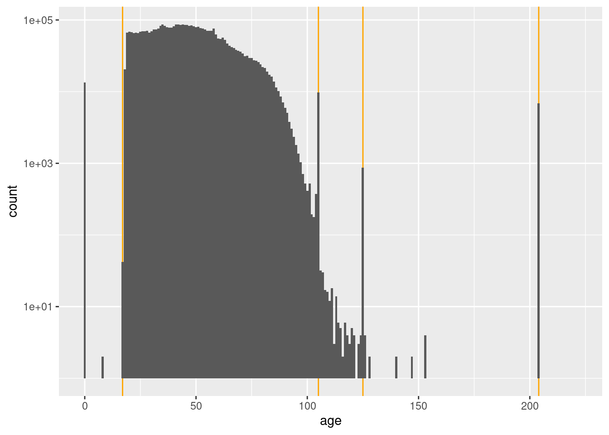

Last updated: 2021-05-27
Checks: 7 0
Knit directory:
fa_sim_cal/
This reproducible R Markdown analysis was created with workflowr (version 1.6.2). The Checks tab describes the reproducibility checks that were applied when the results were created. The Past versions tab lists the development history.
Great! Since the R Markdown file has been committed to the Git repository, you know the exact version of the code that produced these results.
Great job! The global environment was empty. Objects defined in the global environment can affect the analysis in your R Markdown file in unknown ways. For reproduciblity it’s best to always run the code in an empty environment.
The command set.seed(20201104) was run prior to running the code in the R Markdown file.
Setting a seed ensures that any results that rely on randomness, e.g.
subsampling or permutations, are reproducible.
Great job! Recording the operating system, R version, and package versions is critical for reproducibility.
Nice! There were no cached chunks for this analysis, so you can be confident that you successfully produced the results during this run.
Great job! Using relative paths to the files within your workflowr project makes it easier to run your code on other machines.
Great! You are using Git for version control. Tracking code development and connecting the code version to the results is critical for reproducibility.
The results in this page were generated with repository version a6fb2e3. See the Past versions tab to see a history of the changes made to the R Markdown and HTML files.
Note that you need to be careful to ensure that all relevant files for the
analysis have been committed to Git prior to generating the results (you can
use wflow_publish or wflow_git_commit). workflowr only
checks the R Markdown file, but you know if there are other scripts or data
files that it depends on. Below is the status of the Git repository when the
results were generated:
Ignored files:
Ignored: .Rhistory
Ignored: .Rproj.user/
Ignored: .tresorit/
Ignored: _targets/
Ignored: data/VR_20051125.txt.xz
Ignored: data/VR_Snapshot_20081104.txt.xz
Ignored: renv/library/
Ignored: renv/local/
Ignored: renv/staging/
Unstaged changes:
Modified: analysis/m_00_status.Rmd
Note that any generated files, e.g. HTML, png, CSS, etc., are not included in this status report because it is ok for generated content to have uncommitted changes.
These are the previous versions of the repository in which changes were made
to the R Markdown (analysis/m_01_7_check_demog.Rmd) and HTML (docs/m_01_7_check_demog.html)
files. If you’ve configured a remote Git repository (see
?wflow_git_remote), click on the hyperlinks in the table below to
view the files as they were in that past version.
| File | Version | Author | Date | Message |
|---|---|---|---|---|
| Rmd | b41c57c | Ross Gayler | 2021-05-19 | WIP |
| html | b41c57c | Ross Gayler | 2021-05-19 | WIP |
| Rmd | 1499235 | Ross Gayler | 2021-05-16 | WIP |
| Rmd | 411de1e | Ross Gayler | 2021-04-04 | WIP |
| html | 411de1e | Ross Gayler | 2021-04-04 | WIP |
| Rmd | 0bd4a5f | Ross Gayler | 2021-04-03 | WIP |
| html | 0bd4a5f | Ross Gayler | 2021-04-03 | WIP |
# NOTE this notebook can be run manually or automatically by {targets}
# So load the packages required by this notebook here
# rather than relying on _targets.R to load them.
# Set up the project environment, because {workflowr} knits each Rmd file
# in a new R session, and doesn't execute the project .Rprofile
library(targets) # access data from the targets cache
library(tictoc) # capture execution time
library(here) # construct file paths relative to project roothere() starts at /home/ross/RG/projects/academic/entity_resolution/fa_sim_cal_TOP/fa_sim_callibrary(fs) # file system operations
library(dplyr) # data wrangling
Attaching package: 'dplyr'The following objects are masked from 'package:stats':
filter, lagThe following objects are masked from 'package:base':
intersect, setdiff, setequal, unionlibrary(gt) # table formatting
library(stringr) # string matching
library(vroom) # fast reading of delimited text files
library(lubridate) # date parsing
Attaching package: 'lubridate'The following objects are masked from 'package:base':
date, intersect, setdiff, unionlibrary(forcats) # manipulation of factors
library(ggplot2) # graphics
library(skimr) # compact summary of each variable
library(tidyr) # data tidying
# start the execution time clock
tictoc::tic("Computation time (excl. render)")
# Get the path to the raw entity data file
# This is a target managed by {targets}
f_entity_raw_tsv <- tar_read(c_raw_entity_data_file)These meta notebooks document the development of functions that will be applied in the core pipeline.
The aim of the m_01 set of meta notebooks is to work out how to read the
raw entity data, drop excluded cases, discard irrelevant variables,
apply any cleaning, and construct standardised names. This does not
include construction of any modelling features. To be clear, the target
(c_raw_entity_data) corresponding to the objective of this set of
notebooks is the cleaned and standardised raw data, before constructing
any modelling features.
This notebook documents the checking of the demographic variables for any issues that need fixing. These are the non-name variables that are reasonably interpretable as properties of the person.
We will probably use some of these variables as predictors in a compatibility model and/or as blocking variables.
Regardless of whether there are any issues that need to be fixed, the analyses here may inform our use of these variables in later analyses.
Define the demographic variables.
sex_code - Gender codesex - Gender descriptionage - Age at snapshot date (years)birth_place - Birth placevars_resid <- c(
"sex_code", "sex", "age", "birth_place"
)Read the raw entity data file using the previously defined functions
raw_entity_data_read(), raw_entity_data_excl_status(),
raw_entity_data_excl_test(), raw_entity_data_drop_novar(),
raw_entity_data_parse_dates(), and raw_entity_data_drop_cancel_dt().
# Show the data file name
fs::path_file(f_entity_raw_tsv)[1] "VR_20051125.txt.xz"d <- raw_entity_data_read(f_entity_raw_tsv) %>%
raw_entity_data_excl_status() %>%
raw_entity_data_excl_test() %>%
raw_entity_data_drop_novar() %>%
raw_entity_data_parse_dates() %>%
raw_entity_data_drop_admin()
dim(d)[1] 4099699 22Take a quick look at the distributions.
d %>%
dplyr::select(sex_code, sex, age, birth_place) %>%
skimr::skim()| Name | Piped data |
| Number of rows | 4099699 |
| Number of columns | 4 |
| _______________________ | |
| Column type frequency: | |
| character | 4 |
| ________________________ | |
| Group variables | None |
Variable type: character
| skim_variable | n_missing | complete_rate | min | max | empty | n_unique | whitespace |
|---|---|---|---|---|---|---|---|
| sex_code | 0 | 1.00 | 1 | 1 | 0 | 3 | 0 |
| sex | 0 | 1.00 | 3 | 6 | 0 | 3 | 0 |
| age | 0 | 1.00 | 1 | 3 | 0 | 135 | 0 |
| birth_place | 718647 | 0.82 | 2 | 2 | 0 | 56 | 0 |
sex_code 100% filledsex 100% filledage 100% filledbirth_place 82% filledsex_code - Gender codesex Gender - descriptionThese are presumably a code and label in a 1:1 relationship.
d %>%
dplyr::count(sex_code, sex) %>%
gt::gt() %>%
gt::opt_row_striping() %>%
gt::tab_style(style = cell_text(weight = "bold"), locations = cells_column_labels()) %>%
gt::fmt_missing(columns = everything(), missing_text = "<NA>") %>%
gt::fmt_number(columns = n, decimals = 0)| sex_code | sex | n |
|---|---|---|
| F | FEMALE | 2,239,888 |
| M | MALE | 1,844,220 |
| U | UNK | 15,591 |
sex_code and sex in 1-1 relationship
Drop sex_code as redundant
birth_place Birth place
d %>%
dplyr::count(birth_place) %>%
dplyr::arrange(desc(n)) %>%
gt::gt() %>%
gt::opt_row_striping() %>%
gt::tab_style(style = cell_text(weight = "bold"), locations = cells_column_labels()) %>%
gt::fmt_missing(columns = everything(), missing_text = "<NA>") %>%
gt::fmt_number(columns = n, decimals = 0)| birth_place | n |
|---|---|
| NC | 1,875,088 |
| <NA> | 718,647 |
| NY | 189,726 |
| VA | 131,356 |
| SC | 97,827 |
| PA | 93,496 |
| OC | 76,209 |
| OH | 75,765 |
| FL | 69,032 |
| NJ | 67,588 |
| GA | 56,176 |
| CA | 50,560 |
| MI | 48,081 |
| IL | 47,613 |
| WV | 42,143 |
| TX | 37,852 |
| TN | 36,797 |
| MD | 36,369 |
| MA | 33,519 |
| IN | 26,719 |
| KY | 24,276 |
| AL | 23,877 |
| DC | 22,563 |
| CT | 22,394 |
| MO | 16,066 |
| WI | 15,663 |
| LA | 15,362 |
| CO | 12,803 |
| MS | 12,047 |
| IA | 10,891 |
| MN | 10,388 |
| OK | 9,609 |
| WA | 9,083 |
| KS | 8,656 |
| AR | 6,614 |
| ME | 6,284 |
| RI | 6,039 |
| NE | 5,592 |
| DE | 5,373 |
| AZ | 5,043 |
| NH | 4,880 |
| HI | 3,870 |
| VT | 3,783 |
| OR | 3,764 |
| NM | 3,435 |
| AK | 3,201 |
| UT | 3,088 |
| PR | 2,591 |
| ND | 2,399 |
| SD | 2,240 |
| ID | 2,003 |
| MT | 1,901 |
| NV | 1,542 |
| WY | 1,280 |
| VI | 355 |
| GU | 149 |
| AS | 32 |
birth_place values appear to be 2-character US state
abbreviationsage Age (years)
I presume that the source documents actually record date of birth rather than age, and that age is reported in these files as a gesture to privacy.
Look at the distribution of age.
x <- d %>%
dplyr::mutate(age = as.integer(age))
x$age %>% summary() Min. 1st Qu. Median Mean 3rd Qu. Max.
0.00 33.00 45.00 46.93 58.00 221.00 x$age %>% quantile(probs = c(0.003, 0.004, 0.995, 0.996, 0.997, 0.998, 0.999)) 0.3% 0.4% 99.5% 99.6% 99.7% 99.8% 99.9%
0 18 98 105 105 105 204 x %>%
# dplyr::filter(age >= 80) %>%
ggplot() +
geom_vline(xintercept = c(17, 105, 125, 204), colour = "orange") +
geom_histogram(aes(x = age), binwidth = 1) +
scale_y_log10()Warning: Transformation introduced infinite values in continuous y-axisWarning: Removed 87 rows containing missing values (geom_bar).
Drop sex_code.
# Function to drop unneeded admin variables
raw_entity_data_drop_demog <- function(
d # data frame - raw entity data
) {
d %>%
dplyr::select(-sex_code)
}Apply the filter and track the number of rows before and after the filter.
# number of columns before dropping
d %>%
names() %>% length[1] 22d %>%
raw_entity_data_drop_demog %>%
# number of columns after dropping
names() %>% length[1] 21Computation time (excl. render): 173.734 sec elapsed
sessionInfo()R version 4.1.0 (2021-05-18)
Platform: x86_64-pc-linux-gnu (64-bit)
Running under: Ubuntu 20.10
Matrix products: default
BLAS: /usr/lib/x86_64-linux-gnu/blas/libblas.so.3.9.0
LAPACK: /usr/lib/x86_64-linux-gnu/lapack/liblapack.so.3.9.0
locale:
[1] LC_CTYPE=en_AU.UTF-8 LC_NUMERIC=C
[3] LC_TIME=en_AU.UTF-8 LC_COLLATE=en_AU.UTF-8
[5] LC_MONETARY=en_AU.UTF-8 LC_MESSAGES=en_AU.UTF-8
[7] LC_PAPER=en_AU.UTF-8 LC_NAME=C
[9] LC_ADDRESS=C LC_TELEPHONE=C
[11] LC_MEASUREMENT=en_AU.UTF-8 LC_IDENTIFICATION=C
attached base packages:
[1] stats graphics grDevices datasets utils methods base
other attached packages:
[1] tidyr_1.1.3 skimr_2.1.3 ggplot2_3.3.3 forcats_0.5.1
[5] lubridate_1.7.10 vroom_1.4.0 stringr_1.4.0 gt_0.3.0
[9] dplyr_1.0.6 fs_1.5.0 here_1.0.1 tictoc_1.0.1
[13] targets_0.4.2
loaded via a namespace (and not attached):
[1] Rcpp_1.0.6 ps_1.6.0 rprojroot_2.0.2 digest_0.6.27
[5] utf8_1.2.1 R6_2.5.0 repr_1.1.3 backports_1.2.1
[9] evaluate_0.14 highr_0.9 pillar_1.6.1 rlang_0.4.11
[13] data.table_1.14.0 whisker_0.4 callr_3.7.0 jquerylib_0.1.4
[17] checkmate_2.0.0 rmarkdown_2.8 labeling_0.4.2 igraph_1.2.6
[21] bit_4.0.4 munsell_0.5.0 compiler_4.1.0 httpuv_1.6.1
[25] xfun_0.23 pkgconfig_2.0.3 base64enc_0.1-3 htmltools_0.5.1.1
[29] tidyselect_1.1.1 tibble_3.1.2 bookdown_0.22 workflowr_1.6.2
[33] codetools_0.2-18 fansi_0.4.2 crayon_1.4.1 withr_2.4.2
[37] later_1.2.0 grid_4.1.0 jsonlite_1.7.2 gtable_0.3.0
[41] lifecycle_1.0.0 git2r_0.28.0 magrittr_2.0.1 scales_1.1.1
[45] cli_2.5.0 stringi_1.6.2 farver_2.1.0 renv_0.13.2
[49] promises_1.2.0.1 bslib_0.2.5 ellipsis_0.3.2 generics_0.1.0
[53] vctrs_0.3.8 tools_4.1.0 bit64_4.0.5 glue_1.4.2
[57] purrr_0.3.4 processx_3.5.2 parallel_4.1.0 yaml_2.2.1
[61] colorspace_2.0-1 knitr_1.33 sass_0.4.0